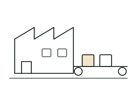
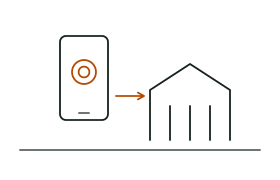
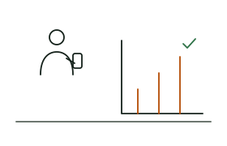
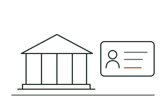
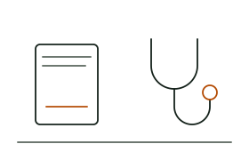
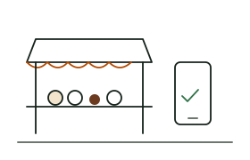
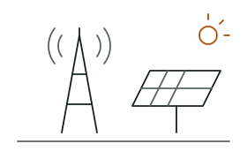

L'agriculture d'abord, puis tous les secteurs qui font avancer l'Afrique.
Les méthodes que nous appliquons dans les plantations servent toutes les organisations qui doivent collecter, gérer et valoriser leurs données.
Prioritaire
Agriculture et agritech
Notre secteur prioritaire. Nous accompagnons exportateurs, coopératives, programmes de durabilité et institutions agricoles dans la traçabilité, la cartographie et la conformité de leurs filières.
Des usines de transformation aux distributeurs, nous numérisons l'approvisionnement, la production et la qualité.

Vos enjeux
Sécuriser l'approvisionnement en matières premières
Maîtriser la qualité et la traçabilité
Piloter stocks, production et coûts
Ce que nous concevons
ERP et gestion de la production
Portails fournisseurs et traçabilité
Tableaux de bord industriels et capteurs
Collecte et recyclage
Recycleurs, centres de collecte et marques : nous appliquons notre expertise de traçabilité aux flux de matières recyclées et au paiement des collecteurs.
Connaître l'origine et les volumes des matières achetées
Payer les collecteurs sans espèces
Répondre aux demandes des marques
Ce que nous concevons
Registre des collecteurs et pesées
Paiements par mobile money
Traçabilité des lots jusqu'au recycleur
Finance et microfinance
Banques, institutions de microfinance et fintech : nous construisons les outils qui rapprochent les services financiers des populations, y compris en zone rurale.

Vos enjeux
Évaluer le risque de clients peu documentés
Servir des clients éloignés des agences
Automatiser les processus et la conformité
Ce que nous concevons
Scoring par la donnée, y compris agricole
Applications mobiles pour agents de terrain
Données de campagne pour le crédit agricole
Intégration mobile money et automatisation
ONG et développement
Nous aidons les organisations de développement à mesurer leur impact et à rendre compte à leurs bailleurs avec des données fiables.

Vos enjeux
Collecter des données de qualité en zone rurale
Suivre des indicateurs sur plusieurs années
Produire des rapports rapidement
Ce que nous concevons
Enquêtes et collecte supervisées
Systèmes de suivi-évaluation sur mesure
Tableaux de bord d'impact partagés
Secteur public
Ministères, agences et collectivités : nous accompagnons la modernisation des services publics et la gestion des registres.

Vos enjeux
Disposer de registres fiables et à jour
Rendre les services accessibles en ligne
Sécuriser les données des citoyens
Ce que nous concevons
Recensements et registres numériques
Plateformes de services en ligne
Hébergement sécurisé et gestion des accès
Éducation et santé
Établissements, programmes éducatifs et acteurs de santé : des outils pour suivre, évaluer et mieux servir.

Vos enjeux
Suivre les apprentissages et la fréquentation
Coordonner des campagnes sur le terrain
Exploiter des données dispersées
Ce que nous concevons
Plateformes de gestion et d'évaluation
Applications de suivi communautaire
Entrepôts de données et indicateurs
Commerce et distribution
Distributeurs, grossistes et réseaux de vente : visibilité sur les ventes, les stocks et les équipes terrain.

Vos enjeux
Suivre les ventes et les stocks en temps réel
Piloter des forces de vente terrain
Vendre en ligne
Ce que nous concevons
Applications commerciales mobiles
ERP, CRM et gestion des stocks
Sites e-commerce et paiement mobile
Énergie et télécoms
Opérateurs et distributeurs : gestion des actifs, des interventions terrain et de la relation client.

Vos enjeux
Gérer des actifs dispersés sur le territoire
Planifier et tracer les interventions
Fidéliser une clientèle nombreuse
Ce que nous concevons
Applications d'intervention hors-ligne
Cartographie des actifs (SIG)
CRM et portails clients
Un projet, une idée, un défi technique ?
Diagnostic offert : un échange de 45 minutes, en visio ou à Abidjan, sans engagement.